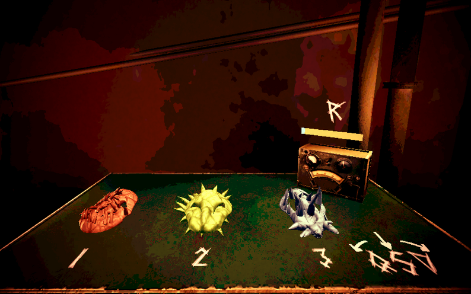
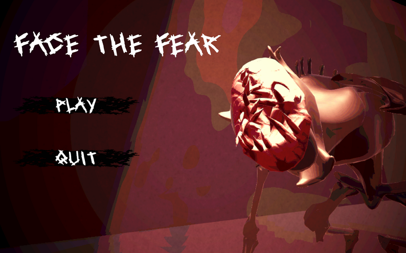
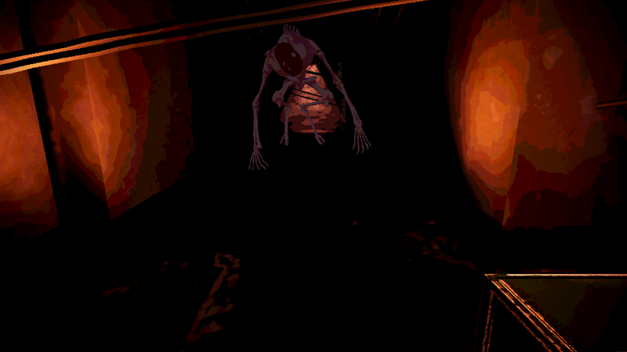

Face The Fear est un jeu d'horreur développé sous Unity. Ce jeu a été fait lors de la global game jam de 2026 qui avait pour thème "Mask"
J’ai travaillé sur les movement du joueur, et ces actions. J'ai aussi fait du un peu de juice avec dotween et du son. Et j'ai intégré beaucoup d'asset, tout en playtestant le jeu.